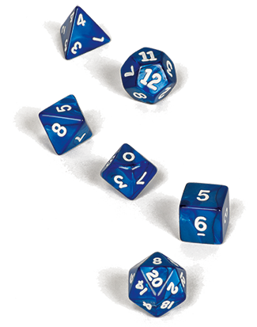

Tables aléatoires
Le hasard est l'un des meilleurs outils dont un MD dispose. Utiliser le hasard est un bon moyen pour accroître le rendement de vos efforts, créer de nouvelles situations de jeu à la volée et vous assurer que vos joueurs ne peuvent jamais réellement vous surprendre. Le cœur d'un système aléatoire efficace pour un MD est de créer des tables sur lesquelles vous pourrez lancer les dés pour répondre à des questions en cours de session de jeu, pour compléter des détails quand vous en avez besoin, ou pour fournir rapidement une grande quantité de contenu quand vos joueurs foncent vers une direction hasardeuse.
Il y a de cela quelques années, j'ai dirigé une petite campagne dans Waterdeep. Comme je supposais que les personnages passeraient beaucoup de temps dans différents bars, tavernes et autres antres du vice, j'avais besoin d'un moyen rapide de compléter la liste des piliers de bars et autres voyous qu'ils allaient rencontrer. Et je me suis rendu compte qu'il est plus simple de trouver six adjectifs pour décrire des personnages que vous pourriez trouver dans un bar sordide que de créer six PNJ spécifiques, surtout si les aventuriers ne vont pas interagir longtemps avec eux. Voici donc une table que j'ai utilisée pour créer aléatoirement la clientèle d'une salle de jeu visitée par les aventuriers. Si les personnages voulaient interagir avec quelqu'un d'autre que les PNJ importants que j'avais créés, je pouvais construire un PNJ avec quatre jets de dés - un pour chaque colonne de la table.
| d6 | Race | Genre | État actuel/Gains | Personnalité/Actions |
| 1 | Nain | Femme | Ivre | Heureux, inlassablement optimiste |
| 2 | Humain | Femme | Gros gagnant | En colère, cherchant les ennuis |
| 3 | Humain | Femme | Gros perdant | Suspicieux, répondant aux questions par d'autres questions |
| 4 | Demi-orc | Homme | Désespère de gagner | Amical, cherchant à passer un bon moment |
| 5 | Gnome | Homme | Commence juste à jouer | Résolu, sec et désagréable |
| 6 | Demi-elfe | Homme | Criminel, pas là pour jouer | Ennuyé, pas réellement interessé par le jeu |

En établissant une autre table similaire, je pouvais aisément créer les employés du tripot.
| d6 | Race | Genre | Personnalité/Actions |
| 1 | Nain | Femme | Nouvel embauché, nerveux |
| 2 | Humain | Femme | Servile, avide de pourboires |
| 3 | Humain | Femme | Nerveux, détourne de l'argent |
| 4 | Demi-orc | Homme | Silencieux, veut que le jeu continue |
| 5 | Gnome | Homme | Arrogant, déteste les clients |
| 6 | Demi-elfe | Homme | Criminel, en train de comploter |
La force de ces tables vient du fait que, jusqu’à ce qu'un joueur parle à un client ou à un employé au hasard, je n'ai aucun besoin de perdre de la puissance cérébrale à penser à ces PNJ. Cela me permet d'utiliser mon temps de préparation pour créer le propriétaire de la salle, le videur et le chef de tables (l'homme en charge de surveiller les croupiers), les PNJ clés avec lesquels je sais que les aventuriers vont interagir.
Conseils généraux
Créer des tables peux permettre de gagner beaucoup de temps mais cela aide également à avoir une idée de ce que vous voulez faire et des effets que vous voulez réaliser avec elles. Les contenus spécifiques d'une table aléatoire déterminent son utilité. Si vous la remplissez avec des éléments ternes et sans intérêt, elle va produire un résultat terne.
Recycler : remarquer mon astucieuse paresse pour la création des tables ci-dessus, dans lesquelles j'ai réutilisé les colonnes "race" et "genre". Une fois que vous disposez de quelques tables, il est facile de les reprendre et de les exploiter avec des adjectifs et idées utiles. Également, comme les employés ne sont pas si importants pour le scénario, leur table a moins de colonnes. Durant le jeu, je m'attendais à ce que les aventuriers interagissent avec le chef de tables, le videur et le propriétaire. C'est pourquoi j'avais détaillé ces PNJ à l'avance. Des croupiers et autres employés totalement étoffés auraient rivalisé avec mes PNJ établis de l'histoire, donc pourquoi y mettre plus d'énergie ?
Aller vers les extrêmes : utilisez des traits qui vont se démarquer de vos joueurs. Vous pouvez remarquer que dans la première table, il n'y a aucune option pour un PNJ équilibré. Les extrêmes se distinguent, donc ne prévoyez pas d'entrée pour des PNJ sages. A la place, créez des entrées qui génèrent des personnages muets, qui crient beaucoup ou qui ne parle que des langues très rares que les aventuriers ne peuvent pas connaitre. Cette méthode rend les tables plus simples à réaliser car elle vous permet de réfléchir pour créer des paires opposées, comme, par exemple, le gros gagnant et le gros perdant de la première table ci-dessus.
Éviter le fade : voici un bon exemple d'erreur. Dans la seconde table, j'ai l'entrée "Silencieux, veut que le jeu continue". Ce n'est pas une super option puisqu'elle peut potentiellement stopper l'interaction et faire bouger les aventuriers. Un PNJ qui ne dit rien de plus que "Allez parler à quelqu'un d'autre. Je suis ennuyeux !" est inutile. Quand vous repérez des traits comme cela dans vos tables, réorganisez-les pour les rendre plus intéressantes.
Action : essayer de semer dans vos tables des traits et des idées qui incitent à l'action dans votre jeu. Dans les deux tables ci-dessus, notez que la colonne finale donne un simple trait de personnalité et une description de comment le PNJ agit. Dans le feu de l'action, vous savez comment dépeindre le PNJ pour faire avancer les choses. Une fois que tout le monde a commencé le roleplay de l'interaction, cet esprit initial de comment agit le PNJ est un point de départ pour diriger la suite.
Fléchir, plier et mutiler : ne laissez par les tables aléatoires dicter l'aventure. Souvenez vous toujours qu'une table vous sert mais pas l'inverse. Si une idée de PNJ sympa vous vient en tête, utilisez la simplement. Les tables aléatoires doivent nourrir votre créativité, pas la remplacer.
Des colonnes, pas des lignes : si vous créez des tables plus grandes, essayez de les garder plus larges que longues. Chaque colonne d'une table représente un large type d'attribut alors que chaque ligne représente un attribut spécifique de chaque type. Il est plus souvent difficile d'obtenir beaucoup d'attributs spécifiques différents. Par exemple, le nombre de races potentielles pour vos PNJ est généralement faible et il est plus facile de trouver six motivations distinctes pour un soldat dans la tour de garde, que vingt. D'expérience, les premiers attributs spécifiques sont simples à générer mais dès que vous en avez besoin de plus de dix ou douze, vous commencez à lutter pour trouver des idées.
Plus important encore, une table avec plus de colonnes que de lignes vous donne de fait plus d'options. Par exemple, une table avec six colonnes et six lignes à le même nombre d'entrées qu'une table avec trois colonnes et douze lignes. Mais la première table vous donne 46656 combinaisons possibles alors que la seconde n'offre que 1728 résultats possibles. Dans le même temps, générer un plus petit nombre de lignes pour chaque table signifie que vous avez plus de chance d'utiliser chaque attribut spécifique créé. Cette paresse intelligente est une coquille de noix : augmenter le rendement de votre travail !
Prendre des notes : si vous utilisez une table pour créer une créature, un lieu ou tout autre aspect du jeu qui est permanent, gardez trace de cette création. Par exemple, quand vous créez un PNJ aléatoire, notez les résultats, la localisation du personnage, etc... Très rapidement, vous pourrez avoir l’équivalent d'une ville de PNJ à votre disposition, chacun représenté par un assortiment succinct de caractéristiques.
Conserver de la fraîcheur : évitez de vous servir toujours des mêmes tables et n'ayez pas peur de créer de nouvelles tables en démembrant vos anciennes. Échangez des colonnes entre les tables, créez en de nouvelles quand cela nécessaire et substituez les éléments spécifiques que vous avez déjà utilisés plusieurs fois. Ne laissez pas vos tables s'installer suffisamment longtemps pour générer des résultats trop familiers pour vos joueurs.
Colorer les combats rapidement et facilement
Le combat est un élément central de l'amusement à D&D et c'est d'autant plus intéressant si vous pouvez présenter des descriptions vivantes de chaque sort ou coup d'épée. Durant un combat, les monstres et personnages doivent réaliser des douzaines d'attaques. Cela fait beaucoup de descriptions à créer pour un MD, surtout à la volée, mais utiliser les tables peut vous aider à créer des batailles intéressantes. Les tables suivantes sont très simples mais elles peuvent aider à colorer des attaques banales.
| Touché | ||
| d6 | Localisation | Effet |
| 1 | Bras | Jet de sang |
| 2 | Jambe | Grognement de douleur |
| 3 | Ventre | Coupure/fissure dans l'armure/camouflage |
| 4 | Épaule | L'arme mord la chair puis est retirée d'un coup sec |
| 5 | Torse | Broyage/craquement d'os |
| 6 | Tête | La cible vacille de douleur |
| Raté | ||
| d6 | Action d'ennemi | Résultat |
| 1 | A vu l'attaque venir | L'ennemi s’échappe |
| 2 | En position défensive | Blocage avec le bouclier / parade avec arme |
| 3 | Mouvement chanceux évitant l'attaque | L'ennemi pare |
| 4 | Mouvement maitrisé de défense | L'ennemi esquive |
| 5 | Bouge rapidement pour se rétablir | L'ennemi ne subit qu'une égratignure |
| 6 | Parade à la dernière seconde | L’ennemi se contorsionne pour se dégager |
Pour rendre les choses encore plus intéressantes et varier vos descriptions, essayer de créer des tables adaptées à des monstres spécifiques. La table suivante fonctionne pour les attaques contre des zombis ou morts-vivants similaires. Pour construire ces tables, j'ai juste pensé à quoi pouvait bien ressembler une attaque contre un zombi et écrit ces descriptions comme des entrées de la table. La beauté de cela est que vous pouvez élaborer ces concepts et des descriptions intéressants lors de votre de préparation. Durant la partie, il peut être plus difficile de trouver des idées similaires sans embourber le jeu.
| Zombi touché | ||
| d6 | Localisation | Effet |
| 1 | Bras | L'arme s'enfonce dans la chair/fait tomber de la chair et des os |
| 2 | Jambe | Gémissement sourd de douleur |
| 3 | Ventre | De la chair ou des organes morts s’échappent de la blessure |
| 4 | Épaule | Blessure fatale... pour les vivants (lance dans l’œil, crane écrasé) |
| 5 | Torse | Un gros morceau de chair tombe du corps |
| 6 | Tête | Un organe interne explose |
| Zombi raté | |
| d6 | Résultat |
| 1 | L'attaque touche le corps mais ne fait aucun dommage critique |
| 2 | L'attaque rebondit sur un os |
| 3 | Le zombi s'agrippe à l'arme |
| 4 | Les os craquent/le sang coule mais le zombi ignore la blessure |
| 5 | L'attaque touche une blessure existante |
| 6 | Le zombi trébuche mais néglige l'attaque |
Ce genre de table peut également être développée pour des combats dans des lieux spécifiques, pas uniquement contre certains type d'ennemis. Lors d'une bagarre dans un bar, les personnages peuvent manquer une attaque car un client ivre trébuche sur eux. Une flaque de bière renversée peut faire glisser un guerrier ou une attaque peut réussir car un ennemi est touché et étourdi par une chope jeté juste au bon moment.
Écrit par Mike Mearls, traduit par pouish